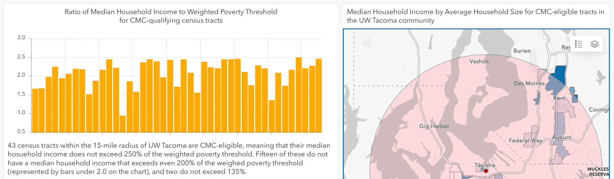

UW Tacoma Connecting Minority Communities Data Dashboard
This is an ArcGIS Dashboard I created to display data related to the University of Washington's eligibility for the NTIA's Connecting Minority Communities grant program. Grants are awarded to Historically Black Colleges and Universities (HBCUs), Tribal Colleges and Universities (TCUs), and Minority-Serving Institutions (MSIs). UW Tacoma qualifies as an MSI, and grant activities can take place both on-campus and in qualifying census tracts in the surrounding community, defined by the NTIA.
This dashboard presents data on the qualifying census tracts in UW Tacoma's surrounding community downloaded from the CMC Dashboard. I then downloaded ACS data from Table S2801: Types of Computers and Internet Subscriptions (2019 5-year estimates) and joined it with the CMC data to understand existing computer and Internet access in the community. The goal of this analysis and visualization was to demonstrate the community needs, challenges, and opportunities that our team seeks to address with our CMC project, "Connect Across Tacoma: Devices, Skills, and Service Expansion for Digital Equity."
I lead the team that is carrying out this project, which was funded in March 2023. The full grant proposal can be found here.
Click the image below to open the Dashboard.
